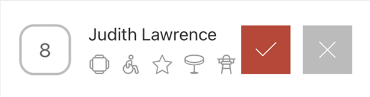
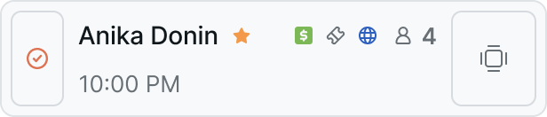

Редизайн Hostme — 8 лет legacy с нуля
Система для работы зала: бронирования, посадка гостей, лист ожидания, карта столов. Ей пользуются хостес, менеджеры и официанты прямо во время смены
5000+ ресторанов · 27 стран · 1M+ резерваций в месяц
Потяните ползунок, чтобы сравнить старый и новый интерфейс
Задача
- Мини и детальные карточки событий (резервации, очередь, официанты)
- Очередь ожидания с типизацией заявок
- Таймлайн загрузки зала
- Интеграция чата с гостем в карточку резерва
Моя роль
- Единственный дизайнер на проекте: весь ресёрч и дизайн от начала до конца
- Выездные исследования в ресторанах — от небольших заведений до сетей
- Разбор NPS, копившегося 8 лет
- Команда реализации: 3 фронтенд- и 3 бэкенд-разработчика, графический дизайнер, арт-директор, 20 сотрудников поддержки в разных странах
Контекст
Продукт жил 8 лет без дизайн-системы и брендбука. За это время накопился пласт проблем, невидимых изнутри — пользователи адаптировались к системе, а не наоборот.
Добровольный переход на новый дизайн
положительный фидбэк
обращений в поддержку
Подход
Бенчмарки
Разобрал OpenTable, Resy, SevenRooms, Tock и российские сервисы. Составлял карту недостающих фич, выносил на команду: применимо к нашей специфике или нет, работает механика на деле или только выглядит хорошо.
Метрики
Доля пользователей, перешедших на новый интерфейс добровольно, и количество обращений в поддержку. Дополнительно через команду саппорта собирал обратную связь напрямую.
Исследования
Интервью, коридорные тесты, A/B, выезды в заведения — от небольших ресторанов до сетей. Отдельно разобрал NPS, копившийся восемь лет.
Подход к декомпозиции
Разбил интерфейс на модули по значимости и сквозным элементам, которые переиспользуются от раздела к разделу. Начал с самых частотных сценариев.
Ограничения
Нельзя было сломать процессы 5000+ действующих ресторанов во время перехода. Решение: декомпозиция интерфейса по частотности сценариев и переиспользуемым сквозным элементам + временно сохранённая возможность отката на старый интерфейс после перевода всех пользователей — это позволило честно замерить отток и NPS вместо форсированного перехода без права на ошибку
Модули
Миникарточки резервации


Каждое событие или сущность — бронь, гость в очереди, официант — показано в списке миниатюрой с главным: время, стол, количество гостей, статус. По клику открывается детальная карточка. Миниатюра (мини-карточка) — то, что сотрудник видит постоянно
- Границы карточки размыты — резерв тяжело считать с одного взгляда
- На длинном контенте вёрстка разваливалась
- Пиктограммы лежали в куче без ограничения по количеству: что не влезло — не показывалось, хотя могло нести ключевое, и сотрудник об этом не знал
- Статусы менялись строго по порядку, в миниатюре показывался не текущий статус, а следующий. Промах требовал закрыть и открыть резерв заново, а неверный статус успевал сработать: кухня начинала готовить предзаказ раньше времени, стол уходил в онлайн-бронирование под сидящими гостями
- Запросы в NPS по виду карточки оказались зеркальными — удобное одним мешало другим
- Тегов гостя и заметок не было, хотя это топ-запрос пользователей
- Собрал элементы резерва в тело карточки, развёл отступами: гости, статус, время
- Задал лимиты блокам внутри — компромисс, места мало, информации много
- Разделил пиктограммы: иконки гостя ушли к его имени, иконки резерва сократил до шести. Добавил статус оплаты и запись на мероприятие
- Кнопка смены статуса с модальным окном, где виден весь список. Менять можно прямо из миниатюры, не открывая детальную
- Вместо компромисса — переключатель вида карточек, настройка в пару кликов
- Добавил с возможностью отключить, если не нужны
Базовая карточка всегда содержит время, стол, гостей и статус. Дополнительные блоки — пиктограммы, заметка и теги гостя — включаются в настройках, поэтому каждый ресторан собирает миниатюру под свой процесс
Детальные карточки резервации
Потяните ползунок, чтобы сравнить старую и новую детальную карточку
Открывается по клику на миниатюру. Здесь вся информация о брони и о госте — то, с чем работают, когда нужно что-то уточнить или изменить
- Перегруженный визуал из-за объёма функционала, ненативное расположение функций, лишние действия до нужной кнопки
- Чтобы поправить данные гостя, нужно было выйти из карточки и уйти в другой раздел
- Поля вроде дня рождения в гостевой книге годами оставались пустыми
- Теги были одним общим набором
- Сообщения в чате приходили без привязки к брони: сотрудник не понимал, о каком резерве речь, рисковал перепутать однофамильцев или звонил уточнять
- Не хватало функционала, который запрашивали пользователи
- Пересобрал структуру: данные события правятся в один клик
- Данные гостя редактируются прямо в карточке резерва
- Заполненное здесь автоматически уходит в гостевую книгу — то же с тегами гостя
- Разделил на теги гостя и теги события. Позже это позволило реализовать маркетинговые рассылки по тегам, а не только по датам
- В месседж-центре закрепил данные резерва с переходом в карточку. А для основного сценария — когда ты уже в карточке — добавил чат прямо в неё: написать, подтвердить, скорректировать, не уходя с экрана
- Добавил вкладки с дополнительной информацией, историю посещений и управление платежами
Сценарии работы в зале разные, поэтому вид карточки выбирает сам пользователь: боковая панель рядом с картой зала — когда важно держать зал перед глазами, полноэкранный режим — когда нужно спокойно разобраться с данными брони и гостя
Разделы внутри карточки позволяют работать с резервом целиком, не покидая его: данные гостя, чат, история посещений и платежи открываются здесь же. В старых карточках такие переходы уводили в другой раздел системы — без пути назад к резерву
Очередь ожидания
Потяните ползунок, чтобы сравнить старую и новую очередь ожидания
Если свободных столов нет, гостя ставят в лист ожидания: пришёл с улицы, оставил онлайн-заявку или у планового резерва нет стола. Раздел построен на тех же мини и детальных карточках, только со своими статусами — и наследует все их решения
Все заявки выводились одним общим списком: считывать его неудобно, пользователи часто путались и теряли важную информацию. Ещё одной большой проблемой было то, что онлайн-резервы, которые требовали действий, падали в этот же общий список
Стало понятно, что заявки делятся на группы в зависимости от их статуса. Развёл их по табам — у новых заявок появился свой раздел, а все разделы, где требуется внимание пользователя, подсвечиваются: изменения заметны сразу и не тонут в общем списке
Таймлайн загрузки зала
Чтобы посадить гостя, нужно понимать, что происходит в зале в конкретный час: какие столы заняты, какие освободятся
Гость спрашивает: «Столик на 16:00?» — и сотрудник выходит из сценария создания брони, чтобы найти ответ. Дальше два пути: сверять список карточек с картой зала вручную — легко ошибиться, или выставить время в системе и смотреть свободные столы — много кликов. Гость всё это время ждёт на линии
Слайдер, закреплённый на экране: по часам видно загруженность, свайпом переходишь к нужному времени и сразу видишь картину по столам. Ответить можно, не выходя из брони, с минимальным шансом на ошибку
Перемотка таймлайна на 10:00 и возврат в реальное время. Карта столов и список резервов перестраиваются под выбранное время и рассчитанную на него загрузку